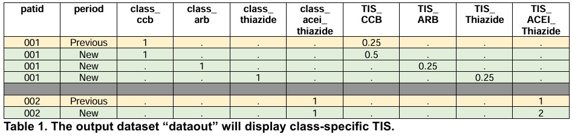
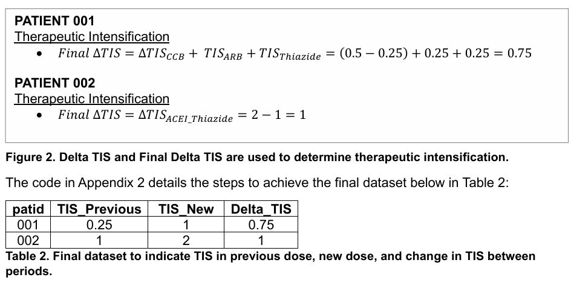

%MACRO tis_by_class(class);
IF class_&class.=1 THEN DO;
/* Step 1: Calculate prescribed daily dose using medication strength,
amount dispensed, and days' supply. */
IF strength1 ne . THEN dose1= strength1*rxamt/rxsup;
IF strength2 ne . THEN dose2= strength2*rxamt/rxsup;
IF strength3 ne . THEN dose3= strength3*rxamt/rxsup;
/* Step 2: Calculate TIS score using the prescribed daily dose and maximum
daily dose. */
IF dose1 ne . AND maxdose1 ne . THEN score1= dose1/maxdose1;
IF dose2 ne . AND maxdose2 ne . THEN score2= dose2/maxdose2;
IF dose3 ne . AND maxdose3 ne . THEN score3= dose3/maxdose3;
/* Step 3: Calculate final TIS for this class. */
IF score1=. THEN TIS_&class.=0;
IF score1 ne . AND score2=. THEN
TIS_&class.=round(score1,0.01);
IF score1 ne . AND score2 ne . AND score3=. THEN
TIS_&class.=round(score1+score2, 0.01);
IF score1 ne . AND score2 ne . AND score3 ne . THEN
TIS_&class.=round(score1+score2+score3, 0.01);
END;
%MEND;
A SAS® Macro vs R function to Calculate Therapeutic Intensity Score
This is inspired from the paper A SAS® Macro to Calculate Therapeutic Intensity Score
The macro %tis_by_class in Sample Code 1 calculates TIS per medication class per patient. The macro must be called for each medication class in the input dataset and the class must be defined when using the macro.
Alternate to SAS macro, R function
tis_by_class <- function(df, class) {
class_col <- paste0("class_", tolower(class))
df <- df %>%
mutate(
# Step 1: Calculate prescribed daily dose
dose1 = ifelse(!is.na(strength1), strength1 * rxamt / rxsup, NA),
dose2 = ifelse(!is.na(strength2), strength2 * rxamt / rxsup, NA),
dose3 = ifelse(!is.na(strength3), strength3 * rxamt / rxsup, NA),
# Step 2: Calculate TIS score using the prescribed daily dose and maximum daily dose
score1 = ifelse(!is.na(dose1) & !is.na(maxdose1), dose1 / maxdose1, NA),
score2 = ifelse(!is.na(dose2) & !is.na(maxdose2), dose2 / maxdose2, NA),
score3 = ifelse(!is.na(dose3) & !is.na(maxdose3), dose3 / maxdose3, NA),
# Step 3: Calculate final TIS for this class
TIS = case_when(
!is.na(score1) & is.na(score2) & is.na(score3) ~ round(score1, 2),
!is.na(score1) & !is.na(score2) & is.na(score3) ~ round(score1 + score2, 2),
!is.na(score1) & !is.na(score2) & !is.na(score3) ~ round(score1 + score2 + score3, 2),
TRUE ~ 0
)
)
# Update the TIS column for the specified class
df <- df %>%
mutate(!!paste0("TIS_", tolower(class)) := ifelse(df[[class_col]] == 1, TIS, NA)) %>%
select(-TIS) # Remove the temporary TIS column
return(df)
}Prior to calling the macro, we need an additional data cleaning step to create a variable for each medication class in the dataset. Then, the TIS macro %tis_by_class can be called for each medication class in the cleaned input dataset called “datain”.
DATA datain;
SET input;
IF class="CCB" THEN class_ccb=1;
IF class="ARB" THEN class_arb=1;
IF class="Thiazide" THEN class_thiazide=1;
IF class="ACEI_Thiazide" THEN class_acei_thiazide=1;
RUN;
DATA dataout;
SET datain;
%tis_by_class(CCB);%tis_by_class(ARB);
%tis_by_class(Thiazide);%tis_by_class(acei_thiazide);
KEEP patid period class_ccb class_arb class_thiazide
class_acei_thiazide TIS_:;
RUN;
we get the following output

proc sql;
create table allscores as
select distinct patid, period, class_ccb, class_arb, class_thiazide,
class_acei_thiazide
, TIS_ccb, TIS_arb, TIS_thiazide, TIS_acei_thiazide
from dataout
order by patid, period;
quit;
proc transpose data=allscores out=long prefix=TIS_;
by patid period;
var TIS_ccb TIS_arb TIS_thiazide TIS_acei_thiazide;
run;
proc sql;
create table long2 as
select patid, period, sum(TIS_1,TIS_2,TIS_3) as TIS_sum
from long
group by patid, period
order by patid, period;
quit;
proc sql;
create table long3 as
select distinct patid, period, sum(TIS_sum) as tis
from long2
group by patid, period
order by patid, period;
quit;
proc transpose data=long3 out=wide prefix=tis_;
by patid;
id period;
var tis;
run;
data final_tis;
set wide;
delta_tis=tis_new-tis_previous;
drop _name_;
run;

Alternate R script
input <- readRDS(here::here('data','input.rds'))
# Apply the function to each class
datain <- input %>%
mutate(
class_ccb = ifelse(class == "CCB", 1, 0),
class_arb = ifelse(class == "ARB", 1, 0),
class_thiazide = ifelse(class == "Thiazide", 1, 0),
class_acei_thiazide = ifelse(class == "ACEI_Thiazide", 1, 0)
)
datain patid period name class rxamt rxsup strength1 strength2
1 001 Previous Amlodipine CCB 90 90 2.5 NA
2 001 New Amlodipine CCB 90 90 5.0 NA
3 001 New Losartan ARB 90 90 25.0 NA
4 001 New HCTZ Thiazide 90 90 12.5 NA
5 002 Previous Lisinopril&HCTZ ACEI_Thiazide 90 90 20.0 25
6 002 New Lisinopril&HCTZ ACEI_Thiazide 180 90 20.0 25
strength3 maxdose1 maxdose2 maxdose3 class_ccb class_arb class_thiazide
1 NA 10 NA NA 1 0 0
2 NA 10 NA NA 1 0 0
3 NA 100 NA NA 0 1 0
4 NA 50 NA NA 0 0 1
5 NA 40 50 NA 0 0 0
6 NA 40 50 NA 0 0 0
class_acei_thiazide
1 0
2 0
3 0
4 0
5 1
6 1datain <- datain %>%
tis_by_class("CCB") %>%
tis_by_class("ARB") %>%
tis_by_class("Thiazide") %>%
tis_by_class("ACEI_Thiazide")
datain patid period name class rxamt rxsup strength1 strength2
1 001 Previous Amlodipine CCB 90 90 2.5 NA
2 001 New Amlodipine CCB 90 90 5.0 NA
3 001 New Losartan ARB 90 90 25.0 NA
4 001 New HCTZ Thiazide 90 90 12.5 NA
5 002 Previous Lisinopril&HCTZ ACEI_Thiazide 90 90 20.0 25
6 002 New Lisinopril&HCTZ ACEI_Thiazide 180 90 20.0 25
strength3 maxdose1 maxdose2 maxdose3 class_ccb class_arb class_thiazide
1 NA 10 NA NA 1 0 0
2 NA 10 NA NA 1 0 0
3 NA 100 NA NA 0 1 0
4 NA 50 NA NA 0 0 1
5 NA 40 50 NA 0 0 0
6 NA 40 50 NA 0 0 0
class_acei_thiazide dose1 dose2 dose3 score1 score2 score3 TIS_ccb TIS_arb
1 0 2.5 NA NA 0.25 NA NA 0.25 NA
2 0 5.0 NA NA 0.50 NA NA 0.50 NA
3 0 25.0 NA NA 0.25 NA NA NA 0.25
4 0 12.5 NA NA 0.25 NA NA NA NA
5 1 20.0 25 NA 0.50 0.5 NA NA NA
6 1 40.0 50 NA 1.00 1.0 NA NA NA
TIS_thiazide TIS_acei_thiazide
1 NA NA
2 NA NA
3 NA NA
4 0.25 NA
5 NA 1
6 NA 2# Select only relevant columns, similar to the KEEP statement in SAS
dataout <- datain %>%
select(patid, period, class_ccb, class_arb, class_thiazide, class_acei_thiazide, starts_with("TIS_"))
# View the resulting data frame
print(dataout) patid period class_ccb class_arb class_thiazide class_acei_thiazide TIS_ccb
1 001 Previous 1 0 0 0 0.25
2 001 New 1 0 0 0 0.50
3 001 New 0 1 0 0 NA
4 001 New 0 0 1 0 NA
5 002 Previous 0 0 0 1 NA
6 002 New 0 0 0 1 NA
TIS_arb TIS_thiazide TIS_acei_thiazide
1 NA NA NA
2 NA NA NA
3 0.25 NA NA
4 NA 0.25 NA
5 NA NA 1
6 NA NA 2# Step 1: Create the 'allscores' table (distinct selection of columns and ordering)
allscores <- dataout %>%
distinct(patid, period, class_ccb, class_arb, class_thiazide, class_acei_thiazide,
TIS_ccb, TIS_arb, TIS_thiazide, TIS_acei_thiazide) %>%
arrange(patid, period)
# Step 2: Transpose 'allscores' to long format
long <- allscores %>%
select(patid, period, TIS_ccb, TIS_arb, TIS_thiazide, TIS_acei_thiazide) %>%
pivot_longer(cols = starts_with("TIS"), names_to = "class", values_to = "TIS_value") %>%
mutate(class = gsub("TIS_", "", class)) # Remove the 'TIS_' prefix
# Step 3: Create 'long2' with sum of TIS values by 'patid' and 'period'
long2 <- long %>%
group_by(patid, period) %>%
summarise(TIS_sum = sum(TIS_value, na.rm = TRUE), .groups = "drop") %>%
arrange(patid, period)
# Step 4: Create 'long3' with sum of 'TIS_sum' by 'patid' and 'period'
long3 <- long2 %>%
group_by(patid, period) %>%
summarise(tis = sum(TIS_sum, na.rm = TRUE), .groups = "drop") %>%
arrange(patid, period)
# Step 5: Transpose 'long3' to wide format
wide <- long3 %>%
pivot_wider(names_from = period, values_from = tis, names_prefix = "tis_")
# Step 6: Calculate delta_tis (difference between 'New' and 'Previous')
final_tis <- wide %>%
mutate(delta_tis = tis_New - tis_Previous) %>%
select(-starts_with("_name")) # Drop any undesired columns
# View the final result
print(final_tis)# A tibble: 2 × 4
patid tis_New tis_Previous delta_tis
<chr> <dbl> <dbl> <dbl>
1 001 1 0.25 0.75
2 002 2 1 1